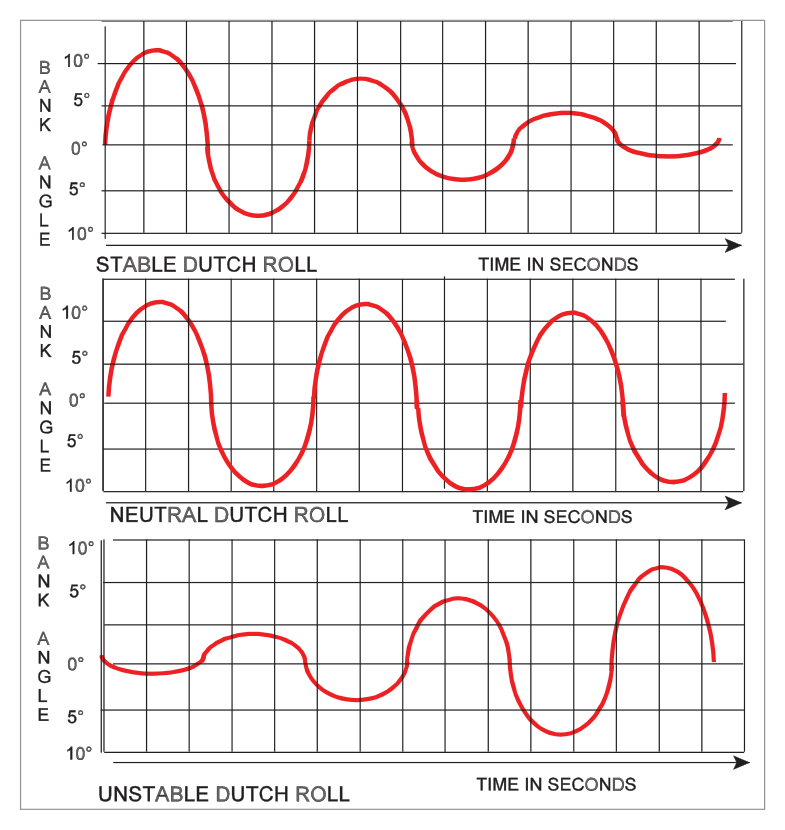
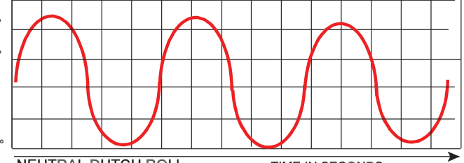
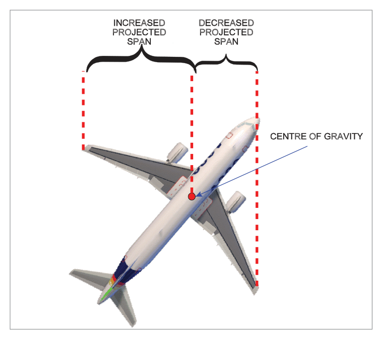
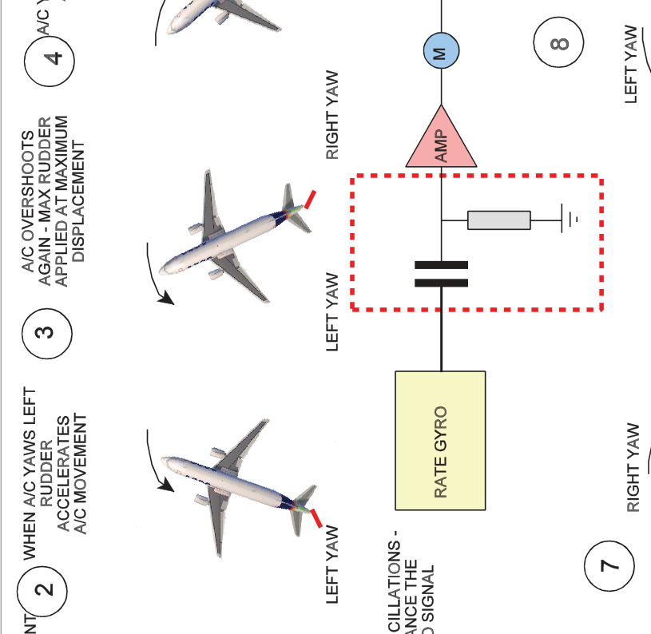
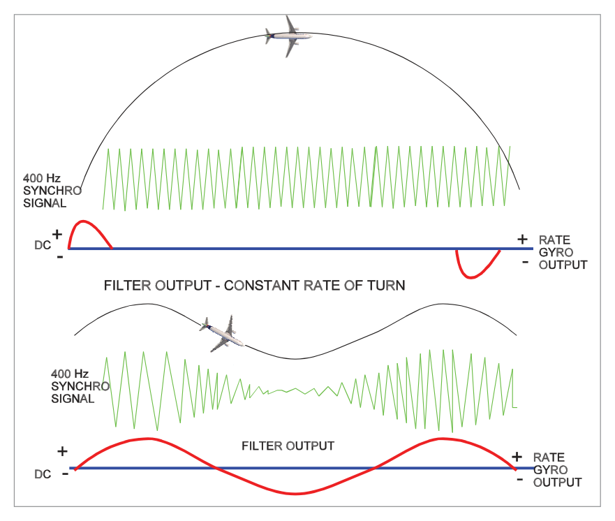
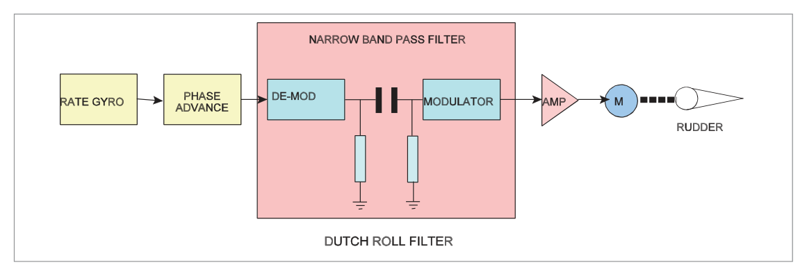

What this section covers: Definition and nature of Dutch Roll oscillation and why swept-wing aircraft are particularly susceptible.
Dutch Roll is an oscillatory motion consisting of a combination of yawing and rolling. It arises from the dynamic interplay between lateral stability and directional stability:
Strong lateral stability (dihedral effect) rolls the aircraft back from a bank
Weak directional stability — insufficient yaw correction — allows the nose to swing out of line
These two tendencies alternate in a coupled yaw-roll oscillation
flowchart LR
A["Gust causes yaw\n(nose left)"] --> B["Swept right wing\nadvances, generates\nmore lift → rolls right"]
B --> C["Strong dihedral effect\nrolls aircraft back left"]
C --> D["Overswing: nose\nnow swings right"]
D --> E["Left wing advances\n→ rolls left"]
E --> F["Cycle repeats\n(Dutch Roll)"]
Why Swept Wings Exacerbate Dutch Roll
Swept-wing aircraft have high dihedral effect (rolling tendency from a yaw disturbance) but relatively low keel surface area for directional damping. This imbalance — strong lateral vs weak directional stability — is the root cause of Dutch Roll susceptibility in jets.

Fig 29.1 — Dutch roll yaw-roll coupling (source p.403)

Fig 29.2 — Dutch roll oscillation path (source p.403)

Fig 29.3 — Swept wing dihedral effect contributing to Dutch roll (source p.403)
2. Why Altitude Worsens Dutch Roll
What this section covers: Why aerodynamic damping decreases at altitude, and why electronic yaw damping is needed.
At altitude, True Air Speed (TAS) is much higher for the same Indicated Air Speed (IAS). The aerodynamic damping of any oscillation depends on the change in angle of attack (AoA) produced per unit disturbance. At high TAS, the same angular disturbance produces a smaller proportional change in AoA → less aerodynamic damping force.
Key principle: Aerodynamic damping decreases with increasing TAS (altitude). This is why aircraft that are neutrally stable or mildly unstable in Dutch Roll at sea level can become significantly under-damped at cruise altitude — requiring an active electronic yaw damper.
3. Yaw Damper — Purpose and Function
What this section covers: What the yaw damper does, when it operates, and its secondary functions.
The yaw damper detects unwanted yaw (Dutch Roll) and applies rapid, small, automatic rudder deflections to damp out the oscillation. Unlike the autopilot rudder channel, the yaw damper operates continuously throughout flight — on during the entire flight from take-off to landing.
Functions of the Yaw Damper
Primary: Damp Dutch Roll oscillations
Turn coordination: Keeps the slip ball centred during coordinated turns
Runway alignment: Assist in aligning aircraft with runway centreline during crosswind landings
Asymmetric thrust assistance: Reduce sideslip tendency during asymmetric power conditions
Large airliners typically have 2 or 3 yaw damper systems. Multiple systems provide redundancy and can operate on split rudder panels (upper and lower) for increased authority and fail-safe capability.
4. Yaw Damper System Architecture
What this section covers: System components and signal flow.
Fig 29.4 — Yaw damper system block diagram (source p.405)

Fig 29.5 — Yaw damper signal flow and components (source p.405)
Rate Gyro Sensing
The core sensor is a yaw rate gyro that measures the angular rate of yaw. The signal goes through the phase advance circuit before the Dutch Roll filter.
5. Phase Advance Circuit
What this section covers: Why phase advance is needed and what it does.
Dutch Roll oscillation has a natural frequency. If the yaw damper applies a corrective rudder deflection based purely on the instantaneous yaw rate signal, there is a small time delay in the overall loop (signal processing, servo response, rudder surface deflection). By the time the corrective force is applied, the aircraft's yaw rate has already peaked and started to decrease — the correction arrives late, potentially making things worse.
Phase Advance Solution: The phase advance circuit shifts the control signal forward in phase, so the corrective rudder deflection is applied at the point of maximum yaw rate (not at the peak displacement angle). This maximises damping effectiveness.

Fig 29.6 — Effect of phase advance circuit on Dutch roll damping (source p.407)

Fig 29.7 — Phase advance signal comparison: with and without phase lead (source p.407)
6. The Dutch Roll Filter
What this section covers: Why a band-pass filter is needed and how it prevents rudder deflection during steady turns.
Without filtering, the yaw damper would apply rudder during every yaw input — including deliberate turns. A Dutch Roll Filter (also called a wash-out filter or narrow band-pass filter) is inserted to prevent this.
Filter Characteristics
Passes only signals at the Dutch Roll frequency (typically 0.3–1 Hz for transport jets)
Attenuates steady-state yaw signals (constant-rate turns produce a DC signal → zero filter output)
Attenuates very low frequency (drift) and very high frequency (structural) signals
Exam Trap: "During a constant-rate turn, the Dutch Roll filter output is ZERO." — the filter sees a steady, unchanging yaw rate and produces no rudder demand. This is the correct behaviour; the yaw damper does not fight coordinated turns.
The filter ensures the yaw damper only damps the oscillatory Dutch Roll component while ignoring steady manoeuvring yaw rates.
7. Rudder Authority and Split Rudder Systems
What this section covers: How much rudder the yaw damper can apply, and redundancy via split rudder.
Rudder Authority per System
Yaw damper rudder deflection authority is limited to prevent excessive rudder inputs that could cause structural overload:
Typical authority: 3°–6° per yaw damper system
This is sufficient to damp Dutch Roll without the pilot noticing large rudder pedal movement
Dual Systems — Accumulative Authority: When two yaw damper systems operate on a single rudder span, their authority is additive (cumulative). So two systems each rated at 4° = 8° combined authority.
Split Rudder
Many transport aircraft have the rudder divided into upper and lower panels, each driven by a separate hydraulic actuator (and a separate yaw damper system). This provides:
Redundancy — one system failure means half the rudder remains operative
Fail-safe operation — aircraft retains approximately 50% Dutch Roll damping capability if one system fails
One Yaw Damper System Failure on Split Rudder: Only half the rudder span is under damping control → approximately half the protection. "Split rudder: one system failure = ½ protection only."
8. Gain Scheduling
What this section covers: Why yaw damper gain must vary with airspeed, and how this is achieved.
At high airspeeds, even small rudder deflections generate large aerodynamic forces. If the yaw damper applies the same rudder deflection at high speed as it does at low speed, the structural loads could be excessive.
The CADC (Central Air Data Computer) provides airspeed/Mach data to the yaw damper computer, which uses this to reduce the gain (sensitivity → rudder deflection per unit yaw rate signal) at high speeds. This is gain scheduling or gain programming:
Low speed → higher gain (larger rudder deflections needed for adequate damping)
High speed → lower gain (smaller deflections to prevent overstress)
9. Operating Modes — Synchronisation and Engaged
What this section covers: The two yaw damper modes and the role of the synchronisation (pre-engagement) mode.
Synchronisation Mode (Pre-Engagement)
When the yaw damper is about to be engaged, it goes through a synchronisation phase. An inverting integrator circuit is used to cancel any transient rudder deflection that would occur if the system engaged with the aircraft already in a yaw. The synchronisation ensures a smooth, transient-free engagement.
Normal operational mode. The yaw damper computer continuously monitors yaw rate from the rate gyro, passes the signal through the phase advance circuit and Dutch Roll filter, and commands the rudder servo to apply corrective deflections.
10. LVDT Feedback and Crosswind Compensation
What this section covers: LVDT rudder position feedback and why the integrator is needed for crosswind landings.
An LVDT (Linear Variable Differential Transformer) on the rudder surface provides position feedback to the yaw damper computer. This ensures the rudder returns to neutral after each corrective deflection — without this, the rudder would creep off centre.
Crosswind Compensation (Integrator Action)
During a crosswind landing, a constant rudder deflection is needed to maintain the aircraft's heading aligned with the runway. The LVDT feedback loop includes an integrator:
During normal Dutch Roll damping: the integrator ramps quickly, ensuring rudder returns to neutral
During a sustained crosswind: the integrator ramps up slowly to maintain the offset rudder position, providing the needed steady-state crosswind correction without fighting the rudder
Exam Tip: "If a crosswind keeps the rudder off-centre, the integrator slowly ramps up to maintain that offset." This is why the yaw damper aids runway alignment in crosswinds rather than fighting the pilot's crosswind correction.
11. System Testing
What this section covers: How the yaw damper is tested pre-flight and the expected indications.
Test Procedure
A Test Switch applies an electrical signal that torques the yaw rate gyro (simulates a yaw input)
The system reacts by commanding a rudder deflection
A Position Indicator (yaw damper rudder position indicator) moves in the direction being tested
When the test switch is released, the indicator returns to centre
Test Interpretation: Indicator moves → correct direction → returns to centre = system serviceable. If the indicator fails to move, or fails to return to centre, a fault is indicated.
Quick Revision Summary — Chapter 29:
Dutch Roll = coupled yaw-roll oscillation; caused by high dihedral effect + weak directional damping (swept wings)
Aerodynamic damping decreases at altitude (higher TAS → smaller proportional AoA change)
Yaw Damper: detects yaw rate → small rapid rudder deflections; operates for entire flight
Test: test switch torques gyro → indicator moves in tested direction → returns to centre
Practice Questions & Detailed Answers
Instructor-generated questions in DGCA CPL/ATPL examination style.
Q1.Dutch Roll tendency is worst in swept-wing aircraft because they have:
Low dihedral effect and high directional stability
High dihedral effect and low directional stability
Low dihedral effect and low directional stability
High dihedral effect and high directional stability
Correct Answer: (b) High dihedral effect and low directional stability
Explanation: Swept wings produce high dihedral effect (strong roll response to sideslip), while providing relatively little keel area for directional damping (low directional stability). This imbalance — strong lateral restoring force with weak directional damping — is the root cause of Dutch Roll. See Section 1.
Why other options are wrong:
(a) Low dihedral effect and high directional stability would actually inhibit Dutch Roll — the directional stability would damp the yaw before rolling develops.
(d) High dihedral + high directional = very stable aircraft; oscillations well-damped.
Instructor's Note: Think of Dutch Roll as the result of the two stability modes "fighting" each other: lateral stability (dihedral) tries to roll the wings level, directional stability (fin) tries to point the nose straight — but with swept wings the dihedral effect wins temporarily before the fin can act, causing the oscillation.
Q2.The purpose of the Dutch Roll filter in the yaw damper system is to:
Increase rudder deflection during turns
Pass only the Dutch Roll frequency and block steady yaw rates
Reduce rudder authority at high altitude
Prevent the rudder from returning to neutral after deflection
Correct Answer: (b) Pass only the Dutch Roll frequency and block steady yaw rates
Explanation: The Dutch Roll filter is a narrow band-pass filter tuned to the Dutch Roll frequency. During a constant-rate turn, the yaw rate is steady (DC signal) and the filter output is zero — so the yaw damper does not apply rudder during intentional turns. It only passes the oscillatory yaw rate signal characteristic of Dutch Roll. See Section 6.
Why other options are wrong:
(a) The opposite — the filter prevents rudder input during turns.
(c) Altitude-based gain reduction is the job of gain scheduling using CADC data, not the Dutch Roll filter.
(d) LVDT feedback ensures the rudder returns to neutral; the filter has no role in this.
Instructor's Note: "Band-pass" = passes frequencies in a band; "wash-out" = washes out the DC (steady-state) component. Both terms describe the same function here.
Q3.The phase advance circuit in the yaw damper is designed to apply the corrective rudder deflection:
At the point of maximum yaw displacement
After the Dutch Roll has completed one full cycle
At the point of maximum yaw rate
When the aircraft rolls past wings level
Correct Answer: (c) At the point of maximum yaw rate
Explanation: The phase advance circuit shifts the corrective signal forward in phase so that the rudder deflection is applied when yaw rate is maximum. Applying the correction at peak yaw rate maximises the damping force (aerodynamic force is proportional to speed of rudder movement relative to the air). See Section 5.
Why other options are wrong:
(a) Maximum yaw displacement is a phase-lagged point — correcting here would be less effective and potentially add energy.
(b) Waiting for a full cycle to complete would allow the oscillation to grow, not damp it.
(d) Roll through wings level is a lateral event; the phase advance is about yaw rate timing.
Instructor's Note: In oscillatory systems, maximum damping is achieved when the corrective force is in phase with the velocity (rate), not the displacement. Phase advance ensures this timing is correct despite system delays.
Q4.If one yaw damper system fails on an aircraft with a split rudder (each panel driven by a separate system), the remaining Dutch Roll protection is:
Zero — full loss of Dutch Roll protection
Approximately 75%
Approximately 50%
100% — no reduction in protection
Correct Answer: (c) Approximately 50%
Explanation: With a split rudder, one yaw damper system controls the upper rudder panel and another controls the lower panel. If one system fails, only half the rudder span is under yaw damper control → approximately half the damping authority is available. See Section 7.
Why other options are wrong:
(a) The remaining operative system still provides 50% protection — not zero.
(b) 75% would imply the failed system contributed only 25%, which is not the case with symmetric split rudder systems.
(d) 100% protection would require full rudder span authority from a single system.
Instructor's Note: Split rudder is specifically designed for this failure case — it avoids total loss of yaw damping while keeping each half independent for maintenance and safety.
Q5.Why does aerodynamic damping of Dutch Roll decrease at high altitude?
Air density increases, reducing the fin's effectiveness
TAS is higher, so the same angular disturbance produces a smaller proportional AoA change
The yaw rate gyro becomes less sensitive at altitude
Swept wing dihedral effect increases with altitude
Correct Answer: (b) TAS is higher, so the same angular disturbance produces a smaller proportional AoA change
Explanation: Aerodynamic damping depends on the change in AoA produced per unit of angular disturbance. At altitude, TAS is much higher for the same IAS — a given angular displacement of the fin produces a proportionally smaller AoA change → smaller restoring aerodynamic force → less natural damping. See Section 2.
Why other options are wrong:
(a) Air density decreases at altitude, and lower density means less aerodynamic force — partially correct but not the complete mechanism. The key is TAS vs AoA, not density alone.
(c) Rate gyros are electromechanical devices; their sensitivity does not meaningfully change with altitude.
(d) Dihedral effect changes with speed but is not described as increasing specifically with altitude in this context.
Instructor's Note: This explains why yaw dampers are essential for jet transport operations but not needed for most piston trainers — the altitude and TAS differences are the critical factors.
Q6.During a yaw damper pre-engagement test, the position indicator moves to the left and then returns to centre. This indicates:
System fault — the indicator should not move during test
System serviceable — correct test response
LVDT failure — the indicator should stay at the deflected position
Phase advance circuit failure
Correct Answer: (b) System serviceable — correct test response
Explanation: During the yaw damper test, the test switch torques the rate gyro to simulate a yaw input. The system responds by deflecting the rudder (indicator moves in the tested direction). When the test switch is released, the LVDT feedback brings the rudder back to neutral (indicator returns to centre). Movement followed by return to centre = system functioning correctly. See Section 11.
Why other options are wrong:
(a) The indicator SHOULD move — that confirms the system responded to the simulated yaw input.
(c) Staying at the deflected position would indicate LVDT failure (rudder not returning to neutral).
(d) Phase advance circuit failure would not affect the test indicator's deflection-and-return response.
Instructor's Note: The two key checks in the yaw damper test: (1) indicator moves = gyro torquing → servo → rudder chain works; (2) indicator returns to centre = LVDT feedback → null position circuit works.
Master Reference Table — Chapter 29
Item
Value / Fact
Section
Dutch Roll cause
High dihedral effect + low directional stability (swept wings)